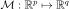
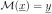
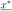
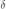
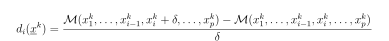

Morris¶
-
class
otmorris.Morris(*args)¶ Morris method.
Available constructors:
Morris(inputSample, outputSample, interval)
Morris(experiment, model)
- Parameters
- inputSample
openturns.Sample Experiment generated thanks to the generate method of the
MorrisExperiment- outputSample
openturns.Sample Response model applied on inputSample
- interval
openturns.Interval Bounds of the experiment inputs.
- experiment
otmorris.MorrisExperiment Morris experiment
- model
openturns.Function Response model to be applied on input data
- inputSample
Notes
We note

with
.The Morris method is a screening method, which is known to be very efficient in case of huge number of input parameters (p >> 1). It is a qualitative sensitivity analysis method which is based on design of experiments and allows to identify the few important factors at a cost of r * (p + 1) simulations. The experiments are of type OAT (One At Time); i.e. only one parameter vary at a time.
The method helps to split input parameters into three groups:
Those with negligible effects on the output,
Those with significant and linear effects on the output,
Those with significant and non linear (or with interactions) effects on the output.
The method rely on input designs defined in the hypersphere unit. To sum up the key points of the method, we consider a point named

in this hypersphere and a parameter
(parameter of discretization if we consider a regular experiment for example). Starting from the point, we choose randomly one direction by increasingslash decreasing one component one component of the point with . Conditionnaly to this direction, we choose then the p-1 directions by randomly selecting one direction at time. We get then a trajectory (path).The Morris method rely on the evaluation of elementary effects which are defined as follow:

With
 trajectories, we get the mean and standard deviation of these effects (we consider the mean of absolute mean effects in our case). The mean explains the sensitivity wheras the standard deviation explains the interactions and non linear effects.
trajectories, we get the mean and standard deviation of these effects (we consider the mean of absolute mean effects in our case). The mean explains the sensitivity wheras the standard deviation explains the interactions and non linear effects.With the first constructor, we consider that input experiment has been generated thanks to the
MorrisExperimentand output is evaluated outside the platform. With second constructor, the output is evaluated inside the platform.Examples
>>> import openturns as ot >>> import otmorris >>> # Define model >>> ot.RandomGenerator.SetSeed(1) >>> alpha = ot.DistFunc.rNormal(10) >>> beta = ot.DistFunc.rNormal(84) >>> gamma = ot.DistFunc.rNormal(280) >>> b0 = ot.DistFunc.rNormal() >>> model = otmorris.MorrisFunction(alpha, beta, gamma, b0) >>> # Number of trajectories >>> r = 5 >>> # Define a k-grid level (so delta = 1/(k-1)) >>> k = 5 >>> morris_experiment = otmorris.MorrisExperimentGrid([k] * 20, r) >>> X = morris_experiment.generate() >>> # Evaluation of the model on the design: evaluation outside OT >>> Y = model(X) >>> # need the bounds when using X and Y >>> bounds = morris_experiment.getBounds() >>> # Evaluation of Morris effects >>> morris = otmorris.Morris(X, Y, bounds) >>> # Get mean/sigma effects >>> mean_effects = morris.getMeanElementaryEffects() >>> mean_abs_effects = morris.getMeanAbsoluteElementaryEffects() >>> sigma_effects = morris.getStandardDeviationElementaryEffects()
Methods
getClassName(self)Accessor to the object’s name.
getId(self)Accessor to the object’s id.
getInputSample(self)Accessor to the input sample.
getMeanAbsoluteElementaryEffects(self[, …])Get the mean of absolute elementary effects.
getMeanElementaryEffects(self[, outputMarginal])Get the mean of elementary effects.
getName(self)Accessor to the object’s name.
getOutputSample(self)Accessor to the output sample.
getShadowedId(self)Accessor to the object’s shadowed id.
Get the standard deviation of elementary effects.
getVisibility(self)Accessor to the object’s visibility state.
hasName(self)Test if the object is named.
hasVisibleName(self)Test if the object has a distinguishable name.
setName(self, name)Accessor to the object’s name.
setShadowedId(self, id)Accessor to the object’s shadowed id.
setVisibility(self, visible)Accessor to the object’s visibility state.
-
__init__(self, *args)¶ Initialize self. See help(type(self)) for accurate signature.
-
getClassName(self)¶ Accessor to the object’s name.
- Returns
- class_namestr
The object class name (object.__class__.__name__).
-
getId(self)¶ Accessor to the object’s id.
- Returns
- idint
Internal unique identifier.
-
getInputSample(self)¶ Accessor to the input sample.
- Returns
- inputSample
openturns.Sample The input sample
- inputSample
-
getMeanAbsoluteElementaryEffects(self, outputMarginal=0)¶ Get the mean of absolute elementary effects.
- Parameters
- marginalint
Output marginal of interest
- Returns
- mean:
openturns.Point The mean effects.
- mean:
-
getMeanElementaryEffects(self, outputMarginal=0)¶ Get the mean of elementary effects.
- Parameters
- marginalint
Output marginal of interest
- Returns
- mean:
openturns.Point The mean effects.
- mean:
-
getName(self)¶ Accessor to the object’s name.
- Returns
- namestr
The name of the object.
-
getOutputSample(self)¶ Accessor to the output sample.
- Returns
- inputSample
openturns.Sample The output sample
- inputSample
-
getShadowedId(self)¶ Accessor to the object’s shadowed id.
- Returns
- idint
Internal unique identifier.
-
getStandardDeviationElementaryEffects(self, outputMarginal=0)¶ Get the standard deviation of elementary effects.
- Parameters
- marginalint
Output marginal of interest
- Returns
- mean:
openturns.Point The standard effects
- mean:
-
getVisibility(self)¶ Accessor to the object’s visibility state.
- Returns
- visiblebool
Visibility flag.
-
hasName(self)¶ Test if the object is named.
- Returns
- hasNamebool
True if the name is not empty.
-
hasVisibleName(self)¶ Test if the object has a distinguishable name.
- Returns
- hasVisibleNamebool
True if the name is not empty and not the default one.
-
setName(self, name)¶ Accessor to the object’s name.
- Parameters
- namestr
The name of the object.
-
setShadowedId(self, id)¶ Accessor to the object’s shadowed id.
- Parameters
- idint
Internal unique identifier.
-
setVisibility(self, visible)¶ Accessor to the object’s visibility state.
- Parameters
- visiblebool
Visibility flag.